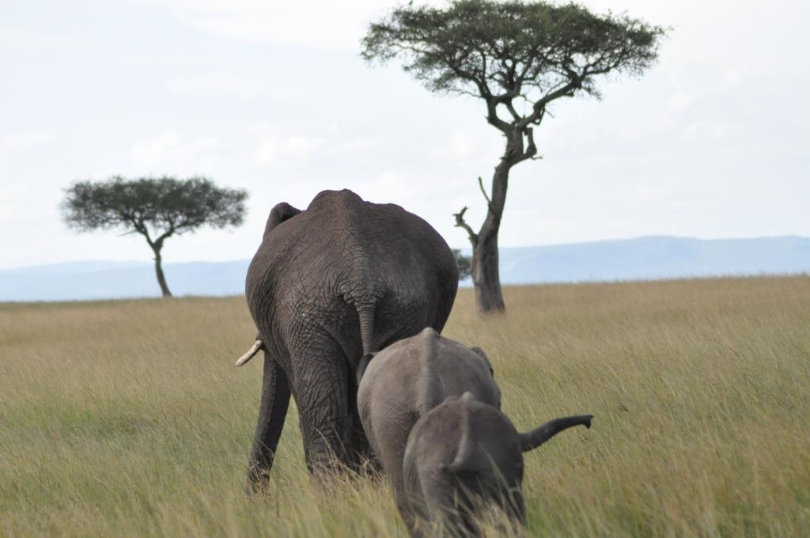
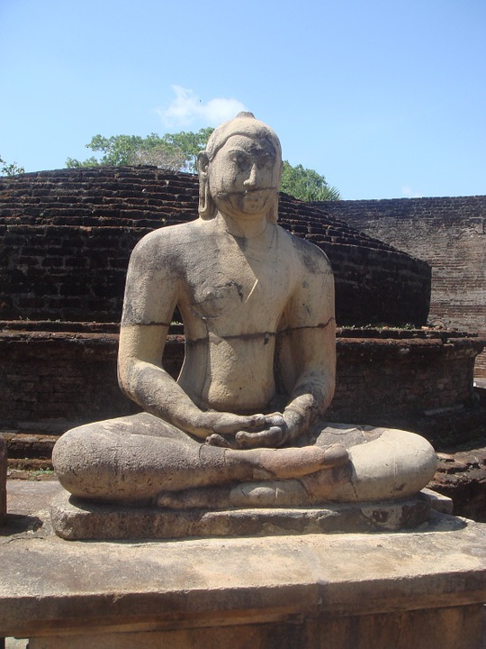
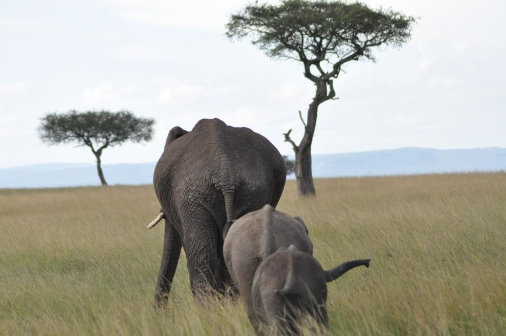
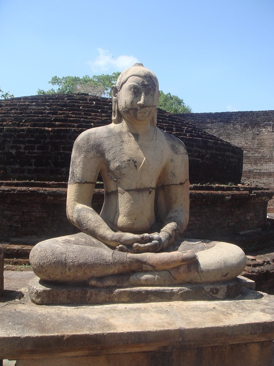

Sri Lanka: Elefanten, bunte Sarees und schöne Sandstrände
Ihr fragt euch vielleicht was ein kleiner Plüschelch in Sri Lanka will, das hab ich mich auch gefragt, aber ich war eingeladen. Und zwar und einer echten ceylonesichen Hochzeit. Da konnte ich natürlich schlecht nein sagen, oder was hättest ihr gemacht? Zunächst kann ich euch sagen dauert so ein Flug ganz schön lang
Aber natürlich habe ich auch alle wichtigen Sehenswürdigkeiten angeschaut. Kandy mit den tollen Tempeln und dem Kandysee mitten in der Stadt. Im Hotel stand tatsächlich ein Schild, dass man die Fenster zu lassen soll, damit nicht Affen kommen, und die Zimmer plündern. Selbstverständlich was ich auch auf dem Sigiriya Felsen, ein großer Stein der mitten in der Gegend rum liegt. Gefühlt sich es tausend Treppen, bis man ober ist. Aber ich hab mich natürlich wieder tragen lassen *grins*. Und von oben hat man eine super Aussicht. Elefanten habe ich natürlich auch gesehen, auf einer Safari mit dem Jeep.
Da sind wir mit einen Jeep in ein Reservat gefahren. Und da waren ganz viele Elefanten an einem See rungestanden und haben sich einfach so fotografieren lassen. Als dann die Sonne langsam unterging, saßen wir am See, der Himmel in allen bunten Farben, und große Schwärme von großen schwarzen Flugtieren. Im erste Moment dachte ich natürlich das sind Vögel, aber auf den zweiten Blick war zu erkennen, dass die alle mit ihrem eckigen Flügeln flattern. Es waren riesengroße Fledermäuse, zu tausenden.
In Sri Lanka sind die meisten Leute Buddhisten, es gibt zwar auch ein paar Muslime und Christen, aber viele Buddhisten. Und an jeder Ecke steht ein Schrein, ein Tempel oder eine Statue. Und die Statuen sind teilweise wirklich groß, also über 10 Meter Höhe. Das ist schon sehr eindrucksvoll. Immer zu Vollmond gibt es in den Tempeln große Zeremonien, da ziehen sich alle weiß an. Was da genau gemacht wird, weiß ich aber nicht, weil mich da keiner mit rein genommen hat.
Zu guter letzt, will ich natürlich noch ein bisschen vom guten Essen erzählen. Curry and Rice! Ihr könnt euch gar nicht vorstellen auf was man so alles ein Curry kochen kann, aus Rote Beete, Linsen, allem möglichen Gemüse und natürlich auch Fleisch. Am Schluss hab ich mir noch ein paar schöne Tage am Strand gegönnt bis ich wieder nach Hause geflogen bin.
 


